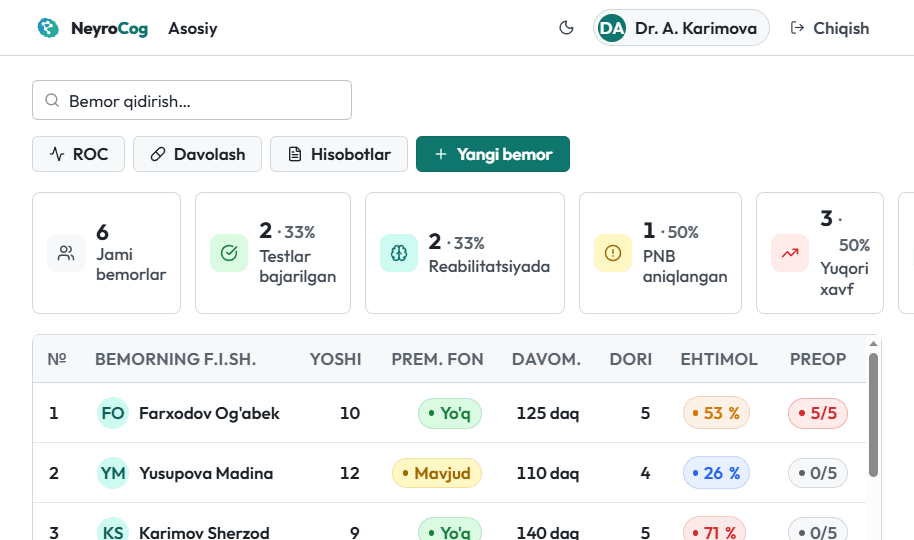
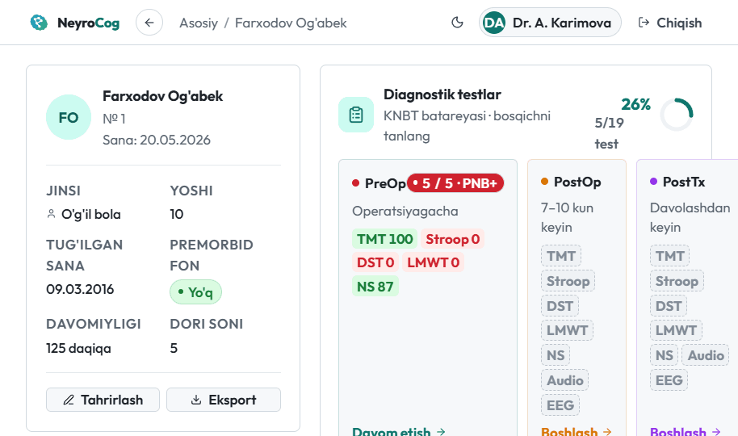
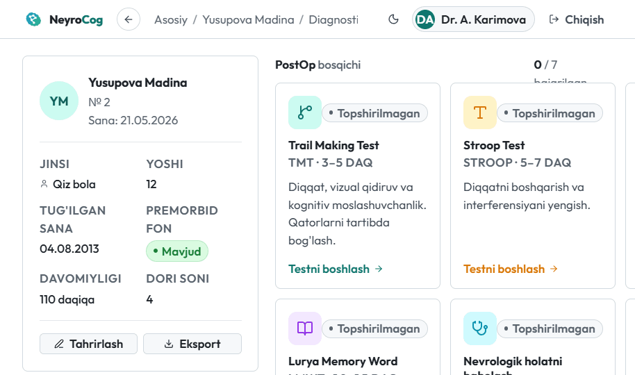
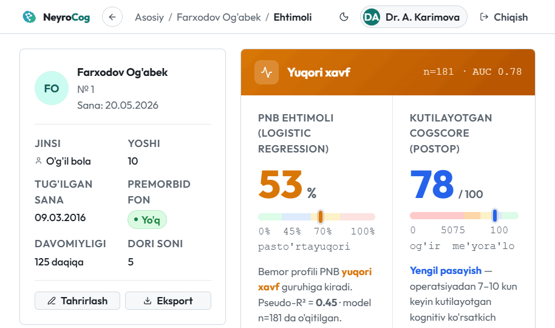
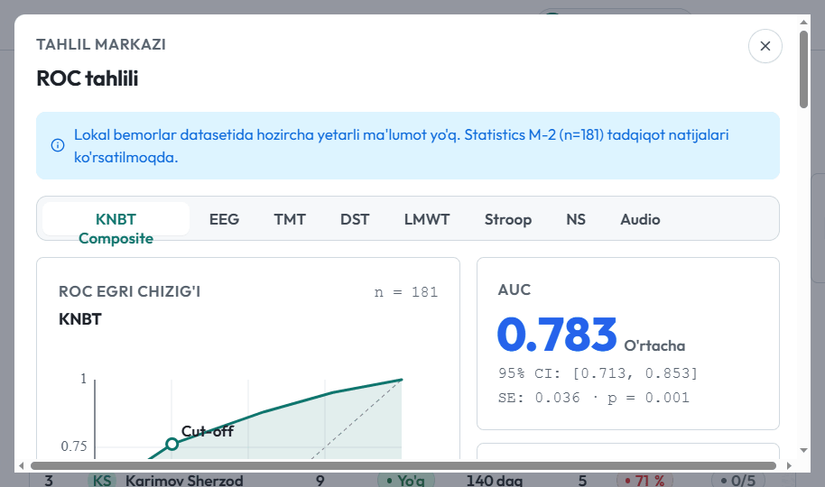
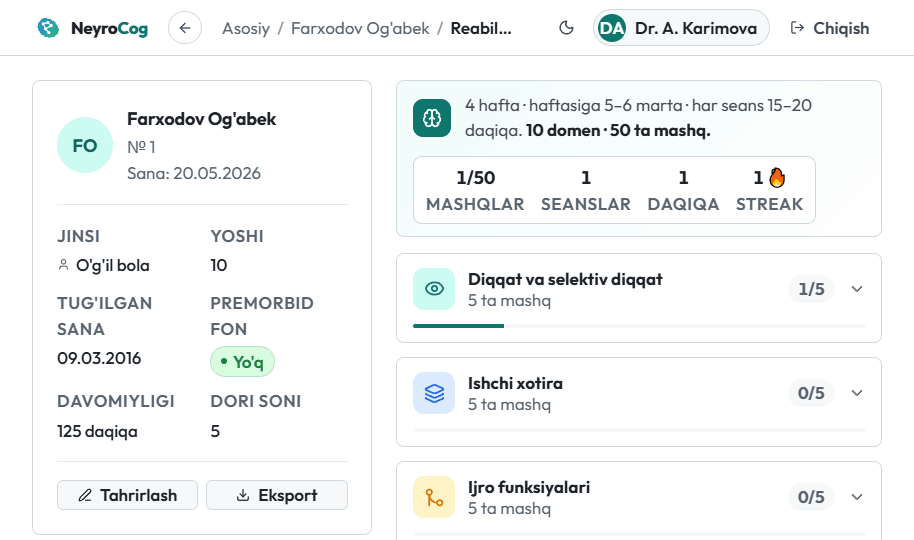

NeyroCog — maktab yoshidagi bolalarda perioperativ neyrokognitiv buzilishni (PNB) standartlashtirilgan testlar orqali baholaydi, xavfni statistik model bilan bashorat qiladi va raqamli reabilitatsiyani boshqaradi — barchasi bitta tizimda.

Diagnostikadan bashoratgacha, reabilitatsiyadan statistik tahlilgacha — NeyroCog perioperativ kognitiv kuzatuvning har bir bosqichini qamrab oladi.
KNBT — Kompleks neyrokognitiv baholash tizimi: Stroop, TMT, Digit Span, Lurya so'z xotirasi, nevrologik baholash (12 shkala), audio gnozis va EEG — bitta batareyada.
Har bemor uchun PreOp (operatsiyagacha), PostOp (7–10 kun) va PostTx (davolashdan keyin) bosqichlarida solishtirma o'lchov.
Har test 0–100 ball, Z-ball va kognitiv salomatlik darajasiga aylantiriladi; composite ISPOCD verdikti avtomatik chiqadi.
Logistik regressiya yosh, anesteziya davomiyligi, dori soni va premorbid fon asosida PNB ehtimolini (%) hisoblaydi.
Har instrument uchun ROC egri chizig'i, AUC + 95% CI, Youden cut-off, sezgirlik/xoslik va DeLong solishtiruvi.
Pantogam + kognitiv trening ta'sirini Cohen's d, tiklanish foizi va NNT ko'rsatkichlari bilan baholash.
10 kognitiv domen bo'yicha — diqqat, ishchi xotira, ijro funksiyalari, psixomotor tezlik va boshqalar.
Mashq darajasi bolaning natijasiga qarab avtomatik moslashadi; kunlik maqsad va streak bilan motivatsiya.
Har seans balli, aniqligi va vaqti saqlanadi; domenlar bo'yicha rivojlanish vizual ko'rsatiladi.
Ro'yxatga olish, qidiruv, kohort KPI statistikasi va har qator uchun bashoratli xavf foizi.
To'liq moslashuvchan dizayn — telefon, planshet va kompyuterda; test ekranlari sensorli boshqaruvni qo'llaydi.
Ilova qurilmaga o'rnatiladi va internetsiz ishlaydi — ma'lumotlar faqat brauzerda xavfsiz saqlanadi.
Kohort ma'lumotlari CSV (Excel) va har bemor uchun to'liq klinik PDF hisoboti.
Yorug' va qorong'i mavzu — uzoq klinik smenalarda ko'zni charchatmaydi, tanlov saqlanadi.
Bemor ma'lumotlari serverga yuborilmaydi — barchasi qurilmaning o'zida lokal saqlanadi.
Bemorning demografik ma'lumotlari, xavf omillari, har bosqichdagi test holati va PNB ehtimoli — hammasi yagona klinik kartada.

Interaktiv testlar bolaning o'zi tomonidan bajariladi, manual shkalalar shifokor tomonidan to'ldiriladi — har biri avtomatik ballanadi.

Logistik va chiziqli regressiya modellari ro'yxatdagi 4 ta xavf omilidan PNB ehtimolini va kutilayotgan CogScore'ni hisoblaydi.

ROC/AUC, DeLong solishtiruvi, confusion matrix, davolash samaradorligi va kohort hisobotlari — eksport bilan.

Tizimga kiring va bemorni xavf omillari bilan ro'yxatga oling.
KNBT batareyasini kerakli bosqichda (PreOp/PostOp/PostTx) bajaring.
CogScore, ISPOCD verdikti va PNB ehtimoli avtomatik hisoblanadi.
Mashqlar tayinlang, progress va davolash samaradorligini kuzating.
Operatsiyadan oldin yuqori xavfli bolalarni aniqlang va perioperativ taktikani moslang.
Kognitiv buzilishni standart o'lchovlar bilan tashxislang va dinamikani kuzating.
Yagona protokol, kohort statistikasi va hisobotlar bilan markazlashgan kuzatuv.
ROC, AUC, regressiya va effekt o'lchamlari bilan ilmiy tahlil va eksport.
Quyidagilar — platformaning haqiqiy ekran tasvirlari. Har bir modul puxta o'ylangan va klinik ish jarayoniga moslangan.

Bitta shifokordan to butun klinikagacha — moslashuvchan tariflar.
Yakka shifokorlar va sinov uchun.
Bo'lim va shifoxonalar uchun.
Ilmiy markaz va universitetlar uchun.
"Operatsiyadan oldin yuqori xavfli bolalarni aniqlash endi soniyalar masalasi. Bashorat moduli kundalik ishimni sezilarli osonlashtirdi."
"KNBT batareyasi va Z-ball baholash standartlashtirilgan — natijalarni bosqichlar bo'yicha solishtirish juda qulay."
"ROC, AUC va DeLong tahlili to'g'ridan-to'g'ri ilovada — tadqiqot ma'lumotlarini eksport qilish ham oson."
NeyroCog bolalar anesteziologlari, jarrohlar, nevrologlar va pediatrlar, shuningdek klinikalar va ilmiy tadqiqotchilar uchun. Bemor — bola, lekin tizim shifokor uchun ishlab chiqilgan; reabilitatsiya mashqlarini bola uyda telefon orqali bajaradi.
Ha. Barcha bemor ma'lumotlari faqat sizning qurilmangiz brauzerida (lokal) saqlanadi va hech qanday serverga yuborilmaydi. Bu maxfiylikni to'liq ta'minlaydi.
Ha. NeyroCog — Progressive Web App (PWA). Birinchi ochilgandan so'ng ilovani qurilmaga o'rnatib, internetsiz to'liq foydalanish mumkin.
"Kirish" tugmasini bosing, tizimga kiring va birinchi bemorni qo'shing. Testlar va bashorat avtomatik ishlaydi — qo'shimcha sozlash shart emas.
Yo'q. PNB ehtimoli faqat ro'yxatga olishda kiritilgan xavf omillaridan (yosh, anesteziya davomiyligi, dori soni, premorbid fon) hisoblanadi — bemor hali test topshirmasa ham mavjud bo'ladi. Test natijalari alohida ko'rsatiladi.
Albatta. Interfeys to'liq moslashuvchan — telefon, planshet va kompyuterda bir xil ishlaydi. Test ekranlari sensorli boshqaruvni qo'llab-quvvatlaydi.
Ha. Kohort ma'lumotlarini CSV (Excel) formatida va har bemor uchun to'liq klinik PDF hisobotini chiqarish mumkin.
Bolalar kognitiv salomatligini erta aniqlash, bashorat qilish va reabilitatsiya qilishning to'liq tizimi — bir necha soniyada.
Bepul ro'yxatdan o'tish